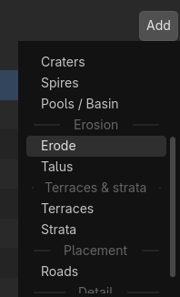
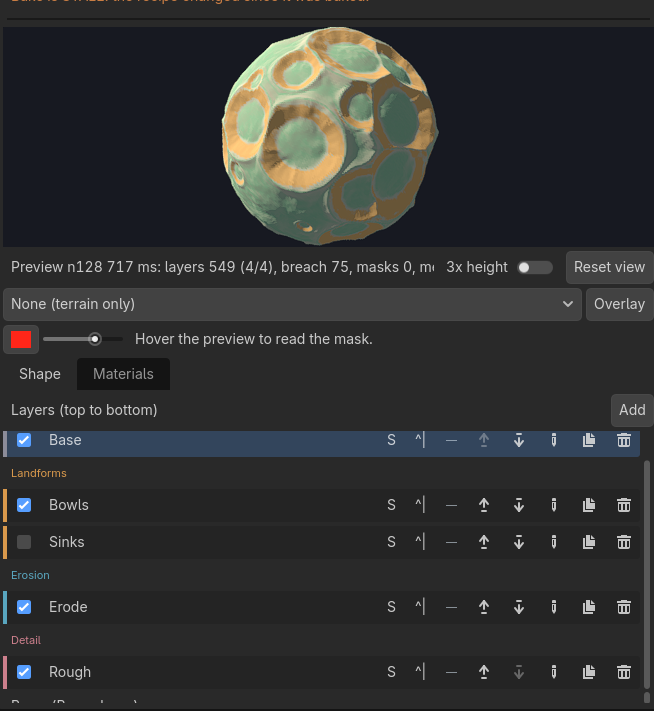
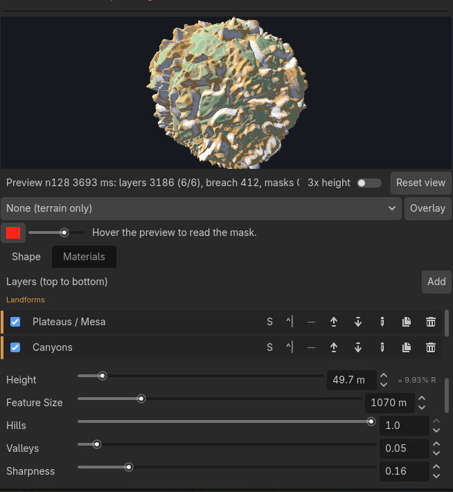

UPLOAD COMPUTER / SERVER LOG
Back to the logupdate
Planetary surface tool online
My planetary surface tool brings layered terrain authoring, surface previews, and baking into a dedicated Godot editor dock.

Surface construction record received. Planetary irregularities are now editable.
- Build seeded planet recipes from layers of hills, craters, canyons, erosion, terraces, and strata.
- Reorder layers, adjust their settings, and undo changes directly in the Planet Surface dock.
- Orbit the preview, isolate individual layers, and inspect masks to see how the surface is assembled. Cached intermediate results reduce repeated work while tweaking.
- Author surface materials in a separate stack, then bake render geometry, simplified traversal collision, and surface maps for use in the game.
The planets are generated during authoring and saved before play.
The accompanying journey captures show two results: Amber Wreck and Ceramic Shell, with their materials, atmospheres, and setpieces in place.


